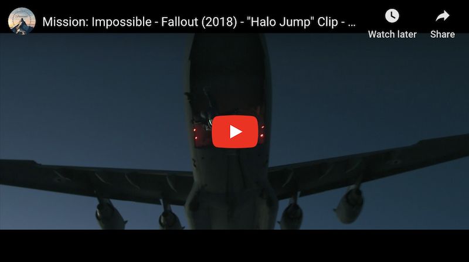
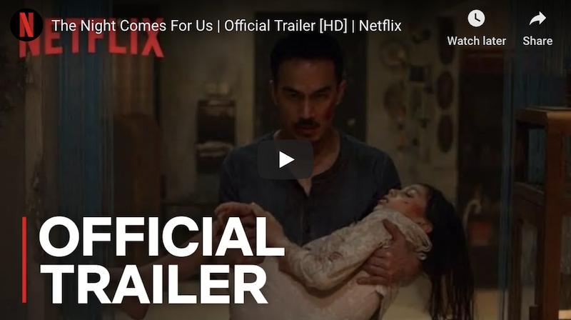
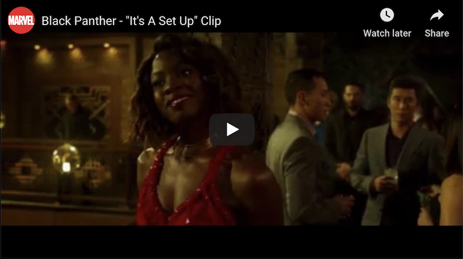
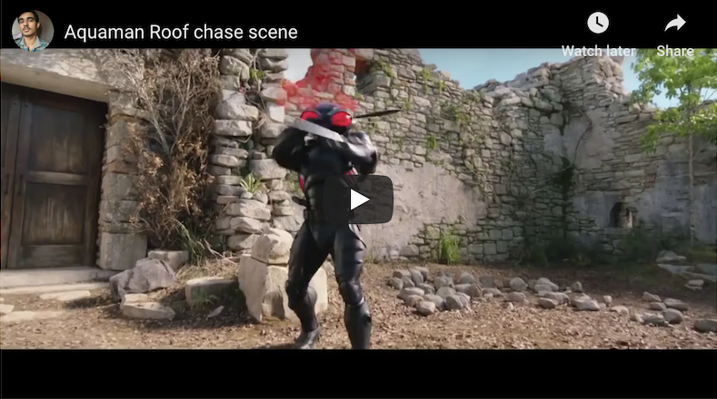
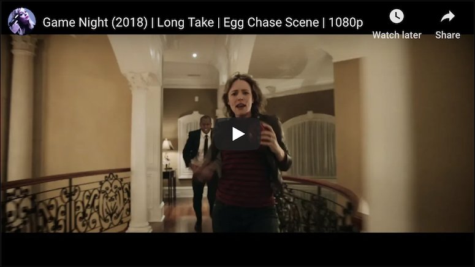

In 2018, the Academy of Motion Pictures Arts & Sciences attempted to introduce a Popular Film category. The effort failed for multiple reasons, the main one being, you know, the Oscars aren’t the People’s Choice Awards. Another, as pointed out by numerous critics, is there are still areas of craft the Academy doesn’t recognize. Stunts, is one of them.
Over the years, figures from the stunt community spoke out in favor of a Best Stunts category at the Oscars to no avail. While Wade Eastwood, the stunt coordinator behind Mission: Impossible — Fallout, isn’t personally “into awards or accolades,” he recognizes how crazy it is “that all these huge action films get Oscars for costume, hair, make-up, visual effects, special effects, music, acting, directing, etc., but not for the stunts or the stunt coordinating and choreography.”
“A lot of times the action is a major reason that the film is so successful,” he writes to EW over email from New Zealand, “and in many cases it’s the coordinator/ 2nd unit director that writes the action that everyone sees.”
Stunts do receive recognition from some awards ceremonies, mainly through the Screen Actors Guild and the Taurus World Stunt Awards, but the Oscars constitutes a much larger stage.
“I feel, as a stunt performer, it’s always nice to be recognized by your peers,” Black Panther stunt coordinator Jonathan Eusebio says. “Being honored by the Academy is the highest honor you can get, but as a stunt person, I’ve always believed in we just do our work. We’re behind-the-scenes guys and we just want to be part of a good movie.”
So, until the time comes when the Oscars recognizes Best Stunts (if ever), we’ll do it for them. Here are some of the best movie stunts of 2018.
Mission: Impossible — Fallout
Standout stunt: Halo jump You can’t talk about Mission: Impossible — Fallout without addressing the time Tom Cruise leaped out of an aircraft at 25,000 feet above the ground. He became the first actor to perform such a feat on camera, and it was something Cruise and director Christopher McQuarrie had been conceiving for quite a while.
“The action, most importantly, has to be story and character driven, otherwise it’s just action for the sake of action, which I never want to do,” Eastwood says. In the story of Fallout, the crew “needed a cool way to get Ethan [Cruise] and Walker [Henry Cavil] into Paris.”
Cruise, an actor who famously performs his own stunts (no matter how totally nuts they may be), performed “over a 100 jumps on camera to get the cut sequence,” according to the stunt coordinator. Eastwood remarks, “We built the largest outdoor wind tunnel in the world at the studio so that [Cruise], myself, and my team could rehearse the complex action moves in between other scenes being shot and then transfer this to the skies later on.”
Prior to the release of Fallout, McQuarrie teased something that would top the opening sequence of the last movie, Rogue Nation — the one where Cruise dangles outside an airplane in the midst of takeoff. The Halo jump was that thing.
The Night Comes for Us
Standout stunt: All. Of. Them. (But particularly Julie Estelle’s apartment brawl) “Holy s—” is a phrase that comes to mind most often when watching The Night Comes For Us, one of the best action movies of 2018, and also one of the straight-up goriest. (For that reason, we’re only showing the trailer and not an actual clip from the movie.)
The sequences just keep escalating. It starts with a backroom nightclub scuffle for actor and action coordinator Iko Uwais to demonstrate once again why he’s one of the greatest talents the stunt community has to offer, followed by a brutal, arm-snapping, meat-cleaver-slashing butcher showdown, followed by an even more gratuitously gory display with a horde of South East Asian Triad henchmen invading an apartment.
Uwais, known for The Raid movies, choreographed the action. Underneath the gallons of fake blood that no doubt went into making this movie, it demonstrates the precision and creativity that goes into his craft. A close-cornered apartment face-off between Julie Estelle’s The Operator, a mysterious woman on a mission to kill the leaders of the Triad, and two assassins could grow dull. But sharp movements, three distinct fighting styles, guerrilla camera shots, and the transformation of an air conditioner into a savage execution method keeps it lively.
Black Panther
Standout stunt: Casino fight Speaking of actors performing their own stunts, the casino fight scene in Black Panther with Chadwick Boseman, Danai Gurira, and Lupita Nyong’o was “100 percent them,” according to Eusebio. “In that scene, you can’t really cheat doubles. It’s all them.”
The sequence, which took approximately four days to shoot, was initially mapped out as one continuous take. “When we started designing that thing, there were a lot of factors involved. The performers have to be pinpoint, the camera moves have to be pinpoint,” Eusebio notes. There were “so many moving parts,” however, that they decided to make it at least “seem like a continuous shot,” while figuring out “different ways to stitch it together so everything [felt] very seamless.”
The actors had already been training well in advance of shooting the scene, but there were still challenges that arose the day of, as with most intricate stunts. The biggest obstacle for Eusebio was going from rehearsing “individually” with the actors to rehearsing all together on set. That’s when, because of “time constraints” with filming or just the fact that “sometimes things don’t work,” adjusting on the fly is crucial.
The results speak for themselves.
Aquaman
Standout stunt: Rooftop chase Whether you dubbed Aquaman a “vibrant ocean fantasy” or a “bloated, waterlogged film,” the stunt team fought their way from the depths of the Trench to the throne of Atlantis. One sequence most emblematic of director James Wan’s keen eye is the exhilarating chase between Arthur (Jason Momoa), Mera (Amber Heard), Black Manta (Yahya Abdul-Mateen II), and a troupe of Atlantean commandos on the roof tops of Sicily.
As his half-brother Orm (Patrick Wilson) threatens to launch a war against the surface world, Arthur and Mera journey across the Seven Seas to track down King Atlan’s lost trident to defeat him. In a brief move to land, the film sees our heroes under attack by Black Manta, backed by Atlantean forces.
Many of the battle sequences were complemented by elongated shots, tracking the action from one space to another. In the big chase, a crane-mounted camera began with Black Manta’s assault on Arthur before zooming off to another end of the city where Mera dodged gunfire. Wan’s team tackled multiple moving parts, including a Texas Switch (wherein one stunt double ducks behind something to be replaced with another), a two-level chase, and visual effects to blend it all together.
Game Night
Standout scene: Keep away Epic stunts aren’t always chase scenes and close combat. Attention must be paid to physical comedy.
Amid the late-night shenanigans of the film Game Night, a group of friends gather for what they think is a staged mystery-kidnapping experience for their regular game night, but it’s all in fact real. They find themselves in various situations reminiscent of familiar kids games: Annie (Rachel McAdams) has to pull a bullet out of Max’s (Jason Bateman) arm in a nod to Operation, Michelle (Kylie Bunbury) and Kevin (Lamorne Morris) stack items on top of a chair Jenga style to escape a locked room, and, in one of the center piece stunts, the gang find themselves in a game of Keep Away with a Fabergé egg as henchmen pursue.
The scene didn’t come together until the crew found the location: a mansion with multiple levels and open balconies. Helmers John Francis Daley and Jonathan Goldstein and their team then went to stunt coordinator and 2nd unit director Steve Ritzi to design something that would look like one continuous shot wherein each cast member had a turn with the egg.
“They basically gave me some general guidelines and then I went there with several stunt people and started walking through different ideas and how can we make this continuous, and try to map a path that would work for the sequence,” Ritzi says. Once he landed on the choreography, it was time to put it to the test. He gathered his stunt team and recorded a “concept previz” to make sure it worked. It did with the assistance of a camera zooming about the space on a cable and another instance of a Texas Switch with a stuntman swapping in for Billy Magnussen to tumble down the stairs.
The principal cast rehearsed this sequence several times in rehearsal before deciding to just go for it. The first time, they got halfway through before having to reset. Another time, the stunt guy falling down the stairs lost control of the egg. In total, it was roughly “four or five” takes, Ritzi says, before they caught it all on camera.
It was grueling on the stuntman, though. “Each time we’re redoing it, he’s doing another stair fall,” Ritzi laughs.